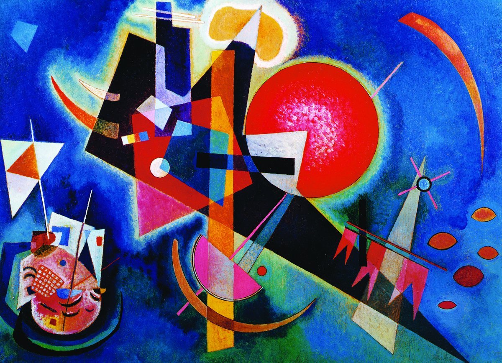

Все переплетено
В мире нитей, но, потяни за нить, за ней потянется клубок.

Нецентрированные свободные прямые - первые прямые, обладающие специфическим свойством, свойством, приводящим их в некую паралель с насыщенными цветами и отличающим их от черного и белого. Собственно ж е л т ы й и с и н и й заключают в себе различные напряжения: на - и отступления. Чисто схематичны прямые (горизонтали, вертикали, диагонали, в особенности первые и вторые) реализуют свои напряжения на плоскости, не обнаруживая стремления оторваться от нее.
У свободных прямых, в особенности у нецентрированных, мы обнаруживаем более независимое отношение к плоскости: они менее сливаются с плоскостью и способны иногда пронизывать ее. Эти линии наиболее чужды впившейся в поверхность точке, поскольку им менее всего присущ элемент покоя.
На о г р а н и ч е н н о й плоскости свободная связь возможна лишь тогда, когда линия вся располагается на ней, то есть когда она не касается внешних границ, о чем более подробно будет сказано в разделе "Основная плоскость".
В любом случае в напряжении нецентрированных свободных прямых и в "насыщенных" цветах существует безусловное родство. Естественная взаимосвязь "графических" и "живописных" элементов, которую мы сейчас можем прослеживать до определенного предела, бесконечно важна для будущего учения о композиции.
Только на этом пути осуществимы планомерные, последовательные эксперименты в области конструкции, и беспросветный туман, в котором мы сейчас обречены продвигаться в лабраторных опытах, безусловно, станет вскоре более проницаемым и менее удушливым.